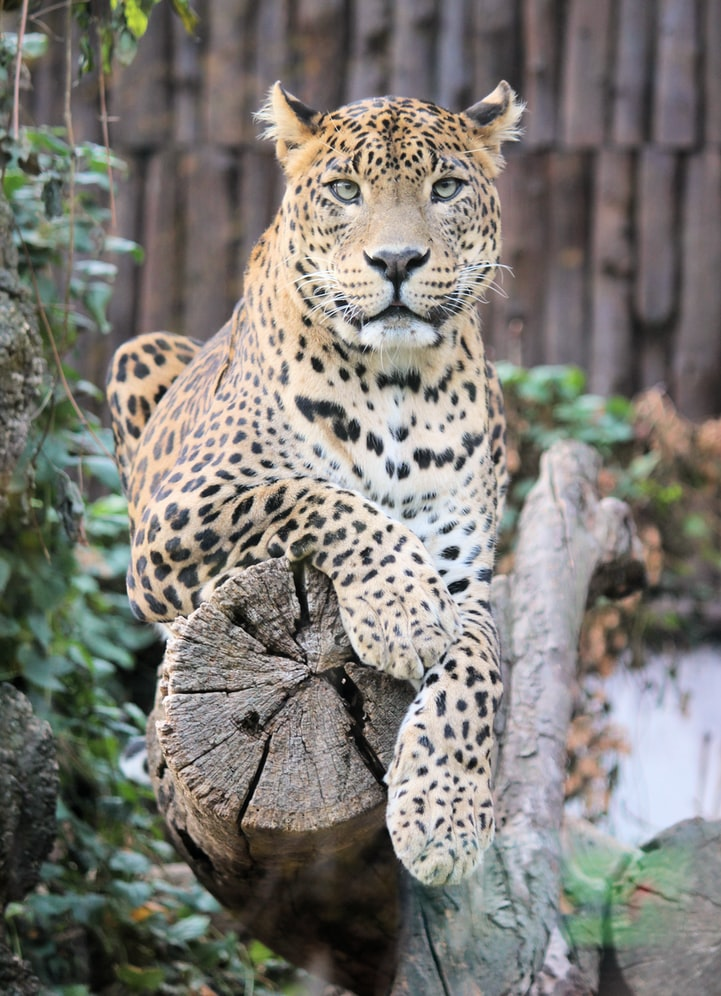

Leopards live in Africa and Asia. Unlike lions, they do not live in groups. Leopards live in habitats where there are some trees. They climb trees well, and do so regularly. This animal is my favorite.
Was isst er gerne?
Schafe
Ziegen
Hasen
Weitere Infos und Bilder

The leopard is one of the five species in the genus Panthera, a member of the car family, Felidae. It is found in sub-Saharan Africa, in some parts of western and central Asia, southern Russia, and on the Indian subcontinent to Southeasr and east Asia. Leopard populations are threatened by habitat loss and fragmentation. Leopard is considered locally extinct in many places around the world. The leopard's fur is soft and thick, notably softer on the belly than on the back. The males are bigger than females. (Quelle: Wikipedia)
 The leopard is one of the five species in the genus Panthera, a member of the car family, Felidae. It is found in sub-Saharan Africa, in some parts of western and central Asia, southern Russia, and on the Indian subcontinent to Southeasr and east Asia. Leopard populations are threatened by habitat loss and fragmentation. Leopard is considered locally extinct in many places around the world. The leopard's fur is soft and thick, notably softer on the belly than on the back. The males are bigger than females. (Quelle: Wikipedia)
The leopard is one of the five species in the genus Panthera, a member of the car family, Felidae. It is found in sub-Saharan Africa, in some parts of western and central Asia, southern Russia, and on the Indian subcontinent to Southeasr and east Asia. Leopard populations are threatened by habitat loss and fragmentation. Leopard is considered locally extinct in many places around the world. The leopard's fur is soft and thick, notably softer on the belly than on the back. The males are bigger than females. (Quelle: Wikipedia)